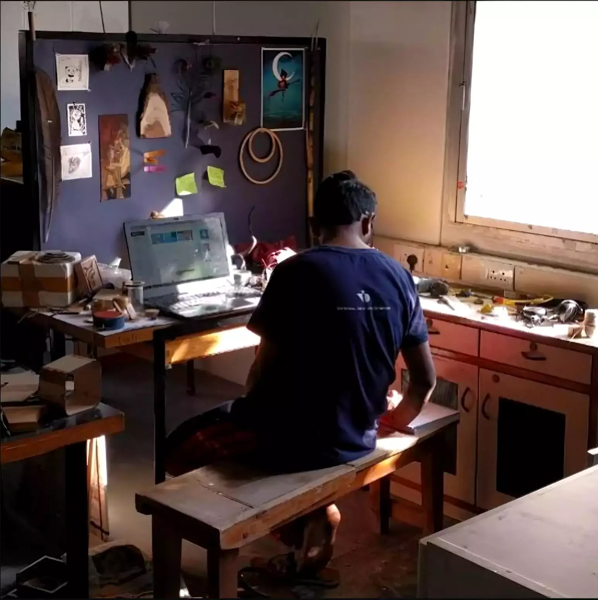

Creative technologist, independent researcher.
Research Interest
Subconscious Mind, Movement studies, Smart material, Edge computing, Daily rituals
Based out of
India
I am a creative technologist and a playful futurist.
A designer and researcher, my interest lies in the areas of technology and its creative, non-intrusive applications,focusing on the critical discussion of technology and its impact on society. Actively involved in combining physical computing tools with storytelling methods. My work revolves around the appropriateness of technology in the context.
I like to use the observations around daily mundane rituals and exhagerate them using the absurdity to bring out what would have been hidden within the layers of hyper-normalisation. As an exercise inspired by 'Alice in Wonderland' I try to imagine and believe in upto 6 impossible absurdities daily and docuement them.
A designer and researcher, my interest lies in the areas of technology and its creative, non-intrusive applications,focusing on the critical discussion of technology and its impact on society. Actively involved in combining physical computing tools with storytelling methods. My work revolves around the appropriateness of technology in the context.
I like to use the observations around daily mundane rituals and exhagerate them using the absurdity to bring out what would have been hidden within the layers of hyper-normalisation. As an exercise inspired by 'Alice in Wonderland' I try to imagine and believe in upto 6 impossible absurdities daily and docuement them.

I am trying to base my work in the domains of anthropology, material science, and robotics( code + electronics).
Asking small questions that may have varied levels of impact.
In the past I have worked as Senior Interaction Designer with ValueLabs UXG. I hold a masters in New Media Design from National Institute of Design, India, and a bachelors degree in Mechanical Enineering.
I am interested in rapid prototyping and doing applied research. I have colaborated with researchers and entreprenuers to develop products POC and MVP's.
On the right see some of my other projects.
In the past I have worked as Senior Interaction Designer with ValueLabs UXG. I hold a masters in New Media Design from National Institute of Design, India, and a bachelors degree in Mechanical Enineering.
I am interested in rapid prototyping and doing applied research. I have colaborated with researchers and entreprenuers to develop products POC and MVP's.
On the right see some of my other projects.